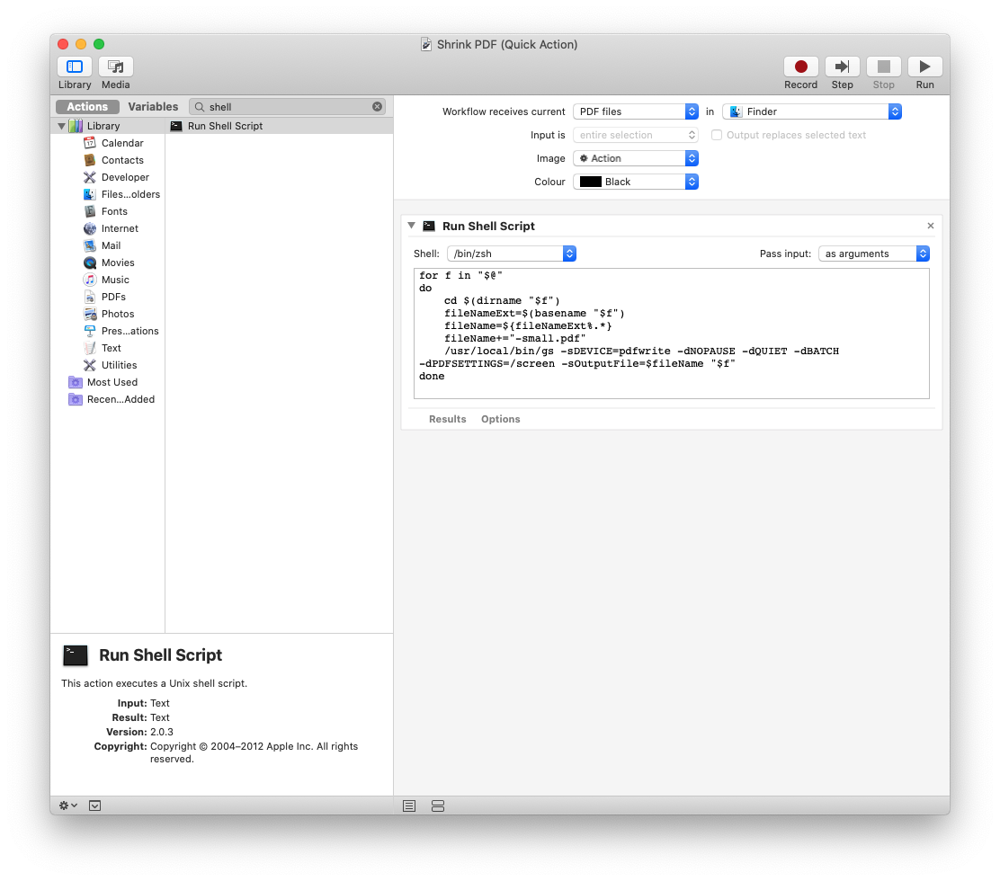
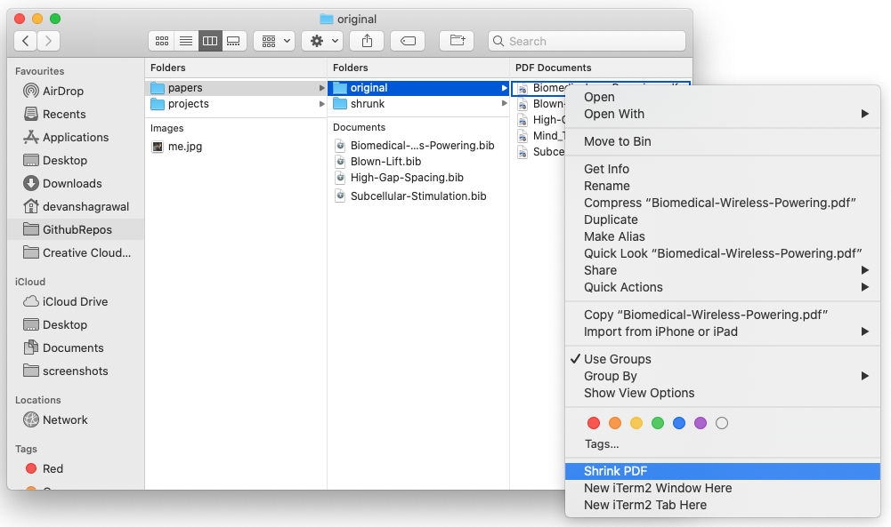

Shirnk PDF using right-click on Mac
I wanted a simple alternative to SmallPDF that lived on my mac. I now have a small right-click utility to shrink files.
A set of pdfs went from 22.9 MB to 9 MB.
I decided to use ghostscript, which is a free and easy to use tool to shrink pdf files.
Step 1. Install ghostscript
brew install ghostscript
This will install ghostscript to usr/local/bin/ghostscript.
Step 2. Launch Automator, and make an Quick Action
Step 3. Set Workflow receives current PDF files in Finder
Step 4. Add the Run Shell Script block and set Pass input to as Argument
At this point, automator should look like this:
Step 5. Add the shell script:
for f in "$@"
do
cd $(dirname "$f")
fileNameExt=$(basename "$f")
fileName=${fileNameExt%.*}
fileName+="-small.pdf"
/usr/local/bin/gs -sDEVICE=pdfwrite -dNOPAUSE -dQUIET -dBATCH -dPDFSETTINGS=/ebook -dPrinted=false -sOutputFile=$fileName "$f"
done
A decent discussion of the ghostscript settings is here. I switched from using screen to ebook as the image compression was too agressive.
This will, for each file, figure out the new name (which has ’-small’ appended to the filename) and run the Ghostscript command to shrink the file. Since we have changed directory to the current filepath, the shrunk file will appear in the same directory as the original file.
Step 6: Save
Save the file and “Shrink PDF”, and now when you right-click on a pdf file in Finder, an option to Shrink the PDF will appear.
Final File
I havent tested if this works, but the automator file can be downloaded here
RUNNING
Now when you select a pdf file, you can shrink it!
I hope this can help someone!